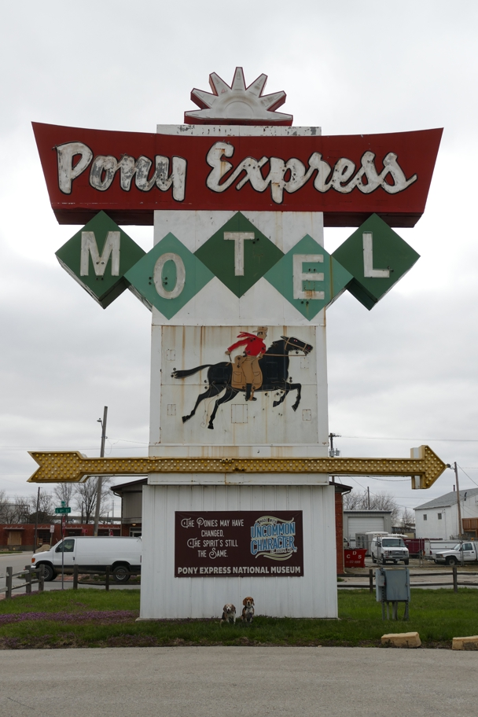

<--Previous Up Next-->

This handsome sign behind the Pony Express Stables no longer indicates a motel. It must have been brought here from somewhere else.
Halley Beagle Missouri St. Joseph Wallace Beagle